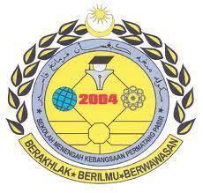

E D U C A T I O N
Primary School

I studied in this school from 2008 to 2013 . I took my UPSR (Ujian Penilaian Sekolah Rendah) here. This school is located in Permatang Pasir, Permatang Pauh, Pulau Pinang. This school is near to my house. The school was originally the former Permatang Pasir Police Station building which was closed in 1888 and turned into a school building.
Secondary School
This school is located at Jalan Permatang Tinggi, Bukit Mertajam, Pulau Pinang. This school is near to my grandparent's house. The school first opened on 1 December 2003. This school took over the site of the former UiTM Penang which operated for 7 years.
Secondary School II
When I was in form 4, I decided to move school to change mmy course to literature. I took SPM(Sijil Pelajaran Malaysia) here. This school is located at Kubang Semang, Pulau Pinang. Actually, I love this school because I had experience many new things. This school also has many good and valuable teachers. They teach me a lot.
University
I studied in Universiti Teknologi Mara Cawangan Kedah ( UiTM Kedah) I went to this university since 2019. and this is my last semester for my diploma. In sha allah I will continued my studies in UiTM also. This university is located in Merbok, Sungai Petani, Kedah. I also can gain many expereince as long as i am here.